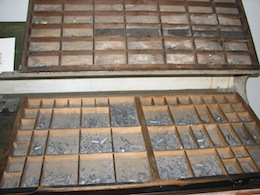
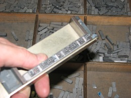
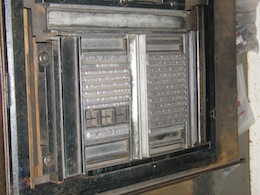

The Plan
The plan was to create a small poster of a great Marcella quotation using old-fashioned typographic methods. To set The Italian Art of Eating by hand, in the manner printed material would have been set a century ago: by letterpress.
Letterpress is where inked metal is brought into direct contact with the paper. To do this, you have to create a (reversed) metal image of what you want printed. Usually one takes a letter at a time from a typecase (the upper case contains capitals, the lower case contains, well, the lowercase letters) and one arranges the letters on a composing stick to build a line of type. This way you work your way through the text (upside down, from the start of the story) one line at a time. Lines are then transferred into a galley, and the galleys get passed to the printers. You have to ‘justify’ the text as you go along: working out the spaces to ensure line endings meet. You can always fiddle about with your set text at the end, but you have to be very careful not to drop anything – all these letters and spaces are loose and can fall out of sequence easily.
  
I went along to the Melbourne Museum of Printing to see if Michael there could help with my project. It turned out that the museum didn’t have enough letters that I needed to hand compose the entire text in the font I wanted to use. Those of you who know me will know that, to me, the choice of font is important.
So we decided that we could cast the type in hot metal instead. We did this with a Ludlow typograph machine.